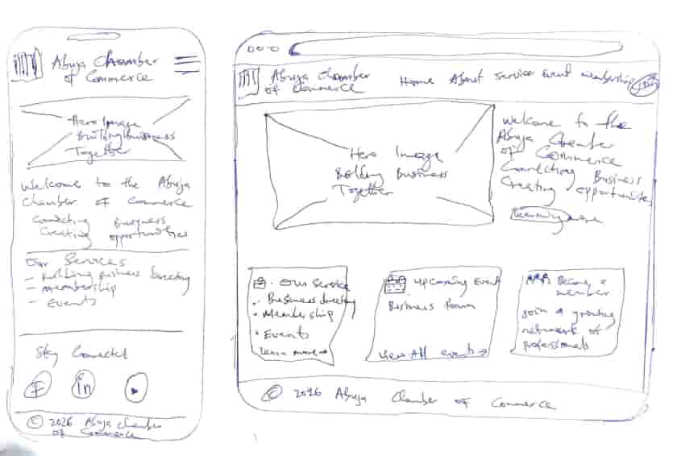

1. Site Name
Abuja Chamber of Commerce
This name identifies the organization and its location. It helps businesses and visitors recognize the chamber.
2. Site Purpose
The website will provide information about the Abuja Chamber of Commerce, its services, events, and membership opportunities. It will help local businesses connect, learn about events, and apply to become members.
3. Audience Scenarios
- How can my business become a member of the chamber?
- Where can I find information about upcoming business events?
4. Color Schema
Blue — #24577D
Used for headings, navigation, and important sections.
Orange — #F4A261
Used for buttons and highlights.
Light Gray — #F5F7FA
Used as the page background.
5. Typography
Nunito Sans will be used throughout the website. Bold Nunito Sans will be used for headings, while regular Nunito Sans will be used for paragraphs and navigation.
6. Wireframes
The image below contains the mobile and desktop homepage wireframes.
